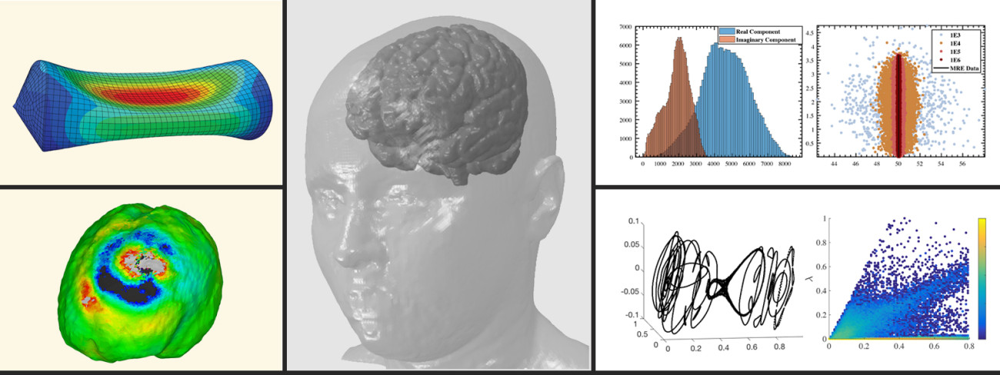
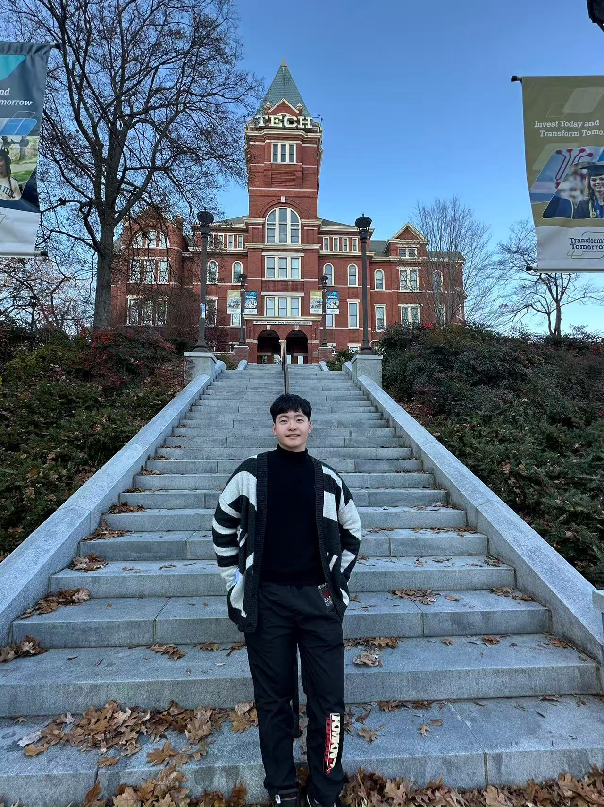

Diffusion Models
Score-based conditional diffusion operators for uncertainty-aware prediction of complex solution fields.
Duke MEMS · Probabilistic scientific machine learning
I am a first-year Ph.D. student in Mechanical Engineering and Materials Science at Duke University, advised by Dr. Hossein (Amir) Salahshoor. My research focuses on diffusion models, ultrasound modeling, and fast surrogate methods for high-frequency wave physics.


Research Focus
Score-based conditional diffusion operators for uncertainty-aware prediction of complex solution fields.
Learning solution operators for oscillatory PDEs where phase sensitivity and spectral bias make deterministic models brittle.
Fast patient-specific surrogates for 3D transcranial focused ultrasound simulation in heterogeneous cranial media.
Advancing computational tools that may help enable precise, adaptive, and personalized brain-machine interface technologies.
Selected Projects
Project 01 · Helmholtz equations
Deterministic neural operators perform well on many PDEs but can struggle with high-frequency wave phenomena, where strong input-to-output sensitivity and spectral bias blur oscillations. This project adopts a probabilistic approach using a score-based conditional diffusion operator, benchmarking across frequencies with errors measured in L2, H1, spectral power, and energy norms.
Project 02 · Transcranial ultrasound
Patient-specific ultrasound planning requires repeated 3D Helmholtz solves in heterogeneous cranial media. This project introduces a conditional diffusion model that predicts ultrasonic pressure fields from patient-specific acoustic inputs and compares against U-Net and Fourier neural operator baselines across skull anatomy, transducer position, tumor region, and phased-array element selection settings.
Outside the Lab
The San Antonio Spurs are my favorite team.
I enjoy PS5, Xbox, and League of Legends.
I like research problems that sit between computation, physics, and human-centered technology.
Contact